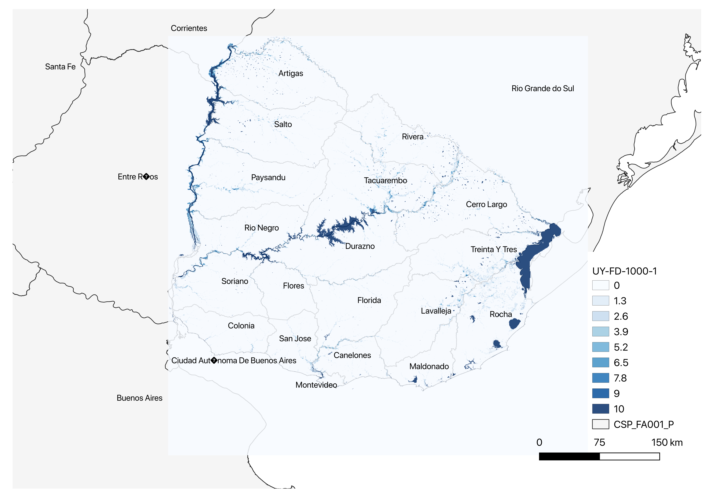
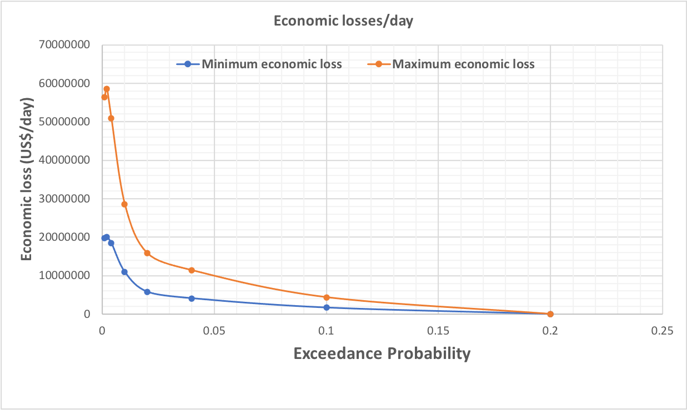

This mini-lecture introduces the theory of quantifying hazards for infrastructure risk analysis. The concept of loss-probability curves and the calculations of expected risks are also discussed. The lecture provides some useful data sources of openly available global hazard maps, that are used widely in risk analysis.
Introduce the concept of hazard exceedance probabilities
Discuss the process of generating loss-probability curves
Show how to calculate expected risks for discrete probabilities and losses.
As introduced in mini-lecture 8.2, an extreme weather event only becomes a hazard when it causes adverse effects to exposed and vulnerable assets. If we are given information on several potential extreme weather events, we need to understand how to filter out events that could be considered hazard events suitable for spatial risk analysis.
For spatial risk analysis, extreme hazard models are created over a 2-dimensional surface area \(\mathbf{x}\), and are characterized by a load \(\mathbf{h}\left( \mathbf{x} \right) \equiv \mathbf{h}\) sampled from a probability density function \(g_{H}(\mathbf{h})\). The most extreme hazards are chosen to be the ones that exceed a particular threshold load (\(\mathbf{h}_{\text{tr}}\)) and are sampled from an exceedance probability (EP) curve that satisfies equation (1). Here \(\mathbb{P}\left\lbrack \mathbf{h} > \mathbf{h}_{\text{tr}} \right\rbrack\) denotes the probability that a chosen hazard load will exceed the threshold level, and \(\int_{\mathbf{0}}^{\mathbf{h}\ }{g_{H}\left( \mathbf{h} \right)d\mathbf{h}}\) is the cumulative density function of hazard loading.
\(\text{EP}\left( \mathbf{h} \right)\mathbb{= \ P}\left\lbrack \mathbf{h} > \mathbf{h}_{\text{tr}} \right\rbrack = 1 - \ \int_{\mathbf{0}}^{\mathbf{h}\ }{g_{H}\left( \mathbf{h} \right)d\mathbf{h}}\) (1)
The reciprocal of the exceedance probability is called the return period of an event.
In simplistic terms, the above means that if we were given a model for creating flood events, we might use the following criteria to sample possible extreme events:
Not all flooding would be a problem – 5cm of flood depth might be okay, but 1metre of flood depth might be catastrophic. Hence, we may select model outputs with \(\mathbf{h} > \mathbf{h}_{\text{tr}} = 1metre\) at several locations.
The exceedance probability is a good indicator for selecting events – an event that has 0.001 probability of being exceeded (i.e. \(\text{EP}\left( \mathbf{h} \right) = 0.001\)) would be a rare event and possibly a hazard. This is a 1 in 1000-year return period flood event.
Figure 8.3.1 shows a river flooding hazard map for Uruguay, from a global flood modelling product known as FATHOM (Wing et al. 2020). River flooding occurs when the rivers overtop their banks, and the water inundates the surrounding areas. The map shows the following information:
The river flood hazard here is defined as an event for which the river flows at every location have 0.001 exceedance probability values, i.e. at every location the selected flow is the one that has a 1 in 1000 chance of being exceeded.
The flood depths in metres are the hazard loads here. Very high flood depths at specific locations (in darkest shades of blue) would make potential areas vulnerable to flooding.
There are now several open-source hazard products at global scales which are being used widely for vulnerability and risk analysis. A few resources include:
Global river and coastal flood maps: Historical and future hazard maps at different return periods (2, 5, 10, 25, 50, 100, 250, 500, 1000 years). All data is available at a 30 arc-seconds resolution (~1km at equator) (Gassert et al. 2015).
Global hazard maps for earthquakes for different return periods (250, 475, 975, 1500, 2475 years) both Peak Ground Acceleration and spectral acceleration. Data is available at 0.072 degrees (~8km at equator).
Global dataset of 10,000 synthetic tropical cyclones paths with cyclone characteristics (e.g., wind speed, pressure) on a global scale. Wind speed probabilities are derived globally (10 metre, 10 minutes sustained speed) for different return periods (10 to 10,000 years) at 10km resolution (Bloemendaal et al. 2019).

Figure 8.3.1: A 1 in 1000 exceedance probability river flood map for Uruguay showing areas with different flood depths in metres. Created from FATHOM data (Wing et al. 2020).
A key result in risk analysis is the distribution of the vulnerability outcomes (losses) for different hazard events sampled from a probability distribution. A comprehensive approach to generating such curves includes the following steps:
Simulate several thousand sample hazard events from a probability distribution (\(g_{H}(\mathbf{h,}t)\)) over space and time – for example, flood models can generate 10,000 flood events over a 50-year timeline over a country.
Intersect each hazard event with the infrastructure assets (e.g. electricity substations, roads, etc.).
Simulate the failure of an asset based on a fragility curve for a given hazard load (\(\mathbf{h}\)) (fragility is further explained in mini-lecture 10.2).
Estimate infrastructure network losses (\(l\)(t)) associated with each hazard event for each year.
Find the mean losses over each year \(\bar{l}\), by taking the average of losses for the same year.
Plot the probability distribution of losses \(\bar{l}\) or plot a curve of loss vs the exceedance probability of a loss, i.e., \(\mathbb{P}\left\lbrack L > \bar{l} \right\rbrack\).
Figures 8.3.2 shows the loss-exceedance probability curves that are created from the steps outlined in the previous section. These curves are derived from failure analysis of a national-scale road network in Viet Nam, subjected to river flooding maps of different return periods (Oh et al. 2019). The losses represent the aggregated daily values of freight transport and economic activity that is affected due to individual road network asset failures in Viet Nam. These losses are uncertain and are reported with a lower (minimum) and upper (maximum) bound.
The exceedance probabilities here are more discrete than what would be ideal for a probabilistic risk analysis. They are taken from the global river flooding dataset mentioned previously (Gassert et al. 2015).
The loss-probability curve here represents the exceedance probabilities in any given year of flooding. In risk analysis there is interest in estimating the Expected Annual Losses (EAL) or Annual Average Losses (AAL), which are the areas under the loss-probability curves. Mathematically this calculation is done using equation (2), where there are \(1,\ldots,m\) discrete instances of exceedance probabilities \(\text{EP}_{k}\) and losses \(l_{k}\).
\(EAL = \ \frac{1}{2}\sum_{k = 1}^{m}{\left( \text{EP}_{k + 1} - \text{EP}_{k} \right)\left( l_{k} + l_{k + 1} \right)}\) (2)

Figure 8.3.2: Minimum and maximum daily loss vs exceedance probability curves for river flooding of the national road network. From a climate risk analysis study in Viet Nam (Oh et al. 2019).
The overall risk calculations and exceedance probability curves being done here apply to any infrastructure network risk analysis problem that we want to quantify. But there are specific nuances in the ways that the losses are estimated that vary across infrastructures.
In general, infrastructure losses are a combination of the monetary value of asset damages that need to be replaced (direct damages) and the economic losses accrued due to disruption of network services (indirect losses). These concepts are discussed in more detail across Lectures 10 and 11.
While the principles of finding direct damages might be the same across all types of infrastructure assets, the process of estimating indirect losses are very network specific. For example, electricity and telecoms network failure result in instantaneous loss of service (electricity), which might result in losses and risks within a matter of a few minutes. On the other hand, transport network failures might result in a gradual build-up of losses over several days or months until commodity supplies run out.
Hence, in infrastructure risk analysis often the quantification of the losses (\(l\)) is not a straightforward process. It often depends on creating good network flow models. Across Lecture 9 transport, water and energy flow models are presented to show the nuances for each type of infrastructure network.
In this lecture, we explained the general theory of sampling hazard events from hazard models. We introduced the concept of exceedance probabilities as applied to spatial hazard event sets. We listed some real-world open-source hazard exceedance probability datasets for global scale flooding, earthquakes and cyclones, used widely in research and practice.
We also explained theoretical steps in the process of generating a comprehensive loss-probability curve for hazards and network losses. We demonstrated a loss-probability curve from a real-world study, and also showed how to estimate the expected annual risks. The different theoretical formulations and concepts introduced in this mini-lecture provide over-arching concepts that apply to every type of network and hazard combination that we could analyse. But we note that there are network-specific nuances that need to be considered in infrastructure loss calculations.